| שם מכונה/תרגיל | מפרק | תנועה | אגוניסט | סינרגיסט | תמונה (מכשיר/תנועה) |
|---|---|---|---|---|---|
| Shoulder Press — בישיבה כנגד מכונה ייעודית, אחיזה צרה | מרפק | כפיפה — Elbow flexion פשיטה — Elbow extension |
Triceps brachii | 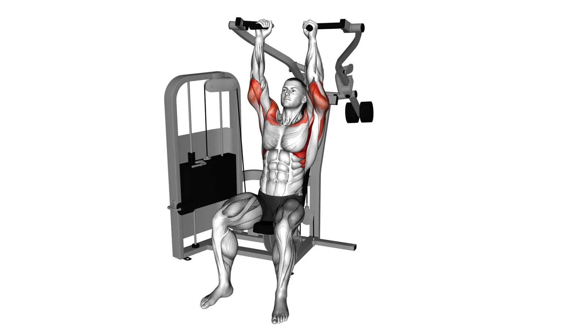 |
|
| Shoulder Press — בישיבה כנגד מכונה ייעודית, אחיזה צרה | מפרק השכמה | סיבוב מטה — Downward rotation סיבוב מעלה — Upward rotation |
Serratus anterior | Upper trapezius, Lower trapezius — בצמד כוחות | |
| Shoulder Press — בישיבה כנגד מכונה ייעודית, אחיזה צרה | מפרק הכתף | פשיטה — Shoulder extension כפיפה — Shoulder flexion |
Anterior deltoid | Pectoralis major — clavicular head, Coracobrachialis, Short head of biceps brachii, Middle deltoid | |
| Shoulder Press — בישיבה כנגד מכונה ייעודית, אחיזה רחבה | מרפק | כפיפה — Elbow flexion פשיטה — Elbow extension |
Triceps brachii | 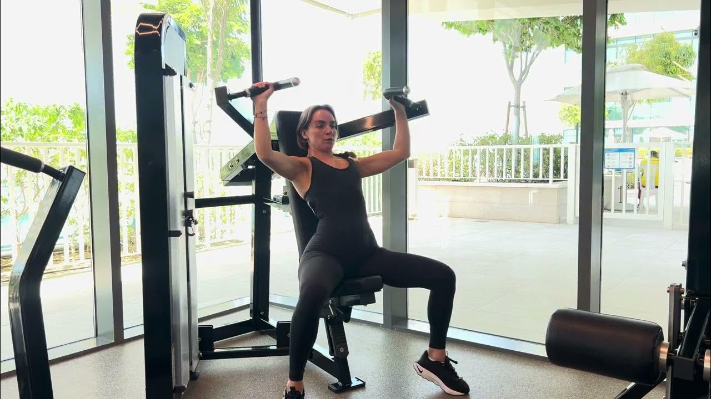 |
|
| Shoulder Press — בישיבה כנגד מכונה ייעודית, אחיזה רחבה | מפרק השכמה | סיבוב מטה — Downward rotation סיבוב מעלה — Upward rotation |
Serratus anterior | Upper trapezius, Lower trapezius — בצמד כוחות | |
| Shoulder Press — בישיבה כנגד מכונה ייעודית, אחיזה רחבה | מפרק הכתף | קירוב — Shoulder adduction הרחקה — Shoulder abduction |
Middle deltoid | Deltoid, Supraspinatus | |
| Abdominal — בישיבה כנגד מכונה ייעודית | עמוד השדרה | פשיטה — Spinal extension כפיפה — Spinal flexion |
Rectus abdominis | Internal oblique, External oblique, Transversus abdominis | 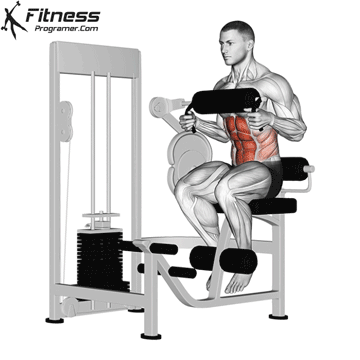 |
| Abdominal — בישיבה כנגד מכונה ייעודית | מפרק הירך | פשיטה — Hip extension כפיפה — Hip flexion |
Iliopsoas | Rectus femoris, Hip adductors | |
| Biceps Curl — בישיבה כנגד מכונה ייעודית | מפרק המרפק | פשיטה — Elbow extension כפיפה — Elbow flexion |
Biceps brachii | Brachialis, Brachioradialis | 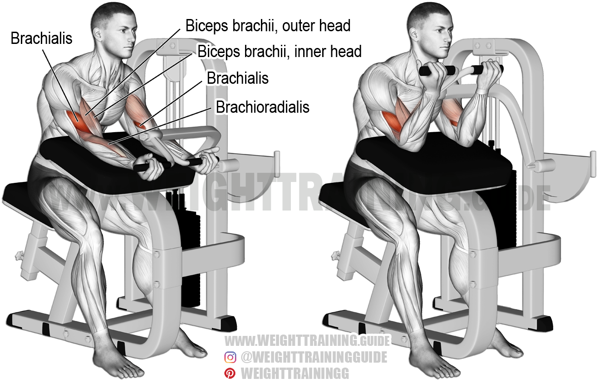 |
| Triceps Extension — בישיבה כנגד מכונה ייעודית | מפרק המרפק | כפיפה — Elbow flexion פשיטה — Elbow extension |
Triceps brachii | 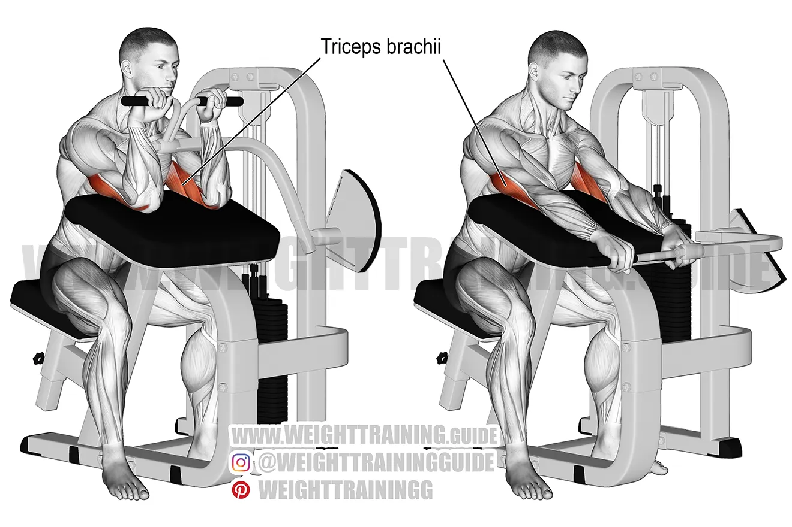 |
|
| Seated Dip — בישיבה כנגד מכונה ייעודית | מפרק הכתף | הרחקה אופקית — Horizontal abduction קירוב אופקי — Horizontal adduction |
Pectoralis major | Coracobrachialis, Short head of biceps brachii, Anterior deltoid | 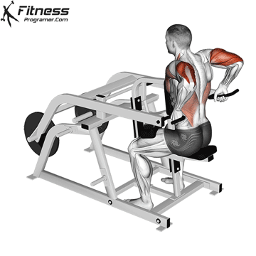 |
| Seated Dip — בישיבה כנגד מכונה ייעודית | מפרק השכמה | סיבוב מעלה — Upward rotation סיבוב מטה — Downward rotation |
Middle trapezius | Rhomboids | |
| Seated Dip — בישיבה כנגד מכונה ייעודית | מפרק המרפק | כפיפת מרפק — Elbow flexion פשיטת מרפק — Elbow extension |
Triceps brachii | ||
| Chest Press — בישיבה כנגד מכונה ייעודית | מפרק הכתף | הרחקה אופקית — Horizontal abduction קירוב אופקי — Horizontal adduction |
Pectoralis major | Coracobrachialis, Anterior deltoid, Short head of biceps brachii | 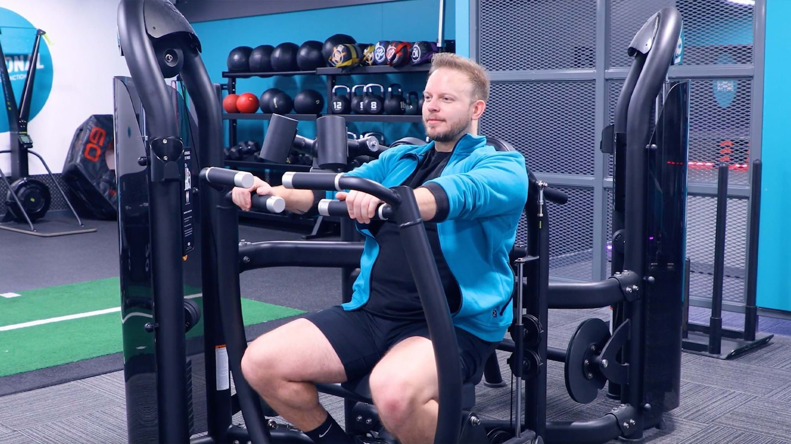 |
| Chest Press — בישיבה כנגד מכונה ייעודית | מפרק השכמה | סיבוב מטה — Downward rotation סיבוב מעלה — Upward rotation |
Serratus anterior | Upper trapezius, Lower trapezius — בצמד כוחות | |
| Chest Press — בישיבה כנגד מכונה ייעודית | מפרק המרפק | כפיפה — Elbow flexion פשיטה — Elbow extension |
Triceps brachii | ||
| Seated Row — בישיבה כנגד מכונה ייעודית | מפרק המרפק | פשיטה — Elbow extension כפיפה — Elbow flexion |
Biceps brachii | Brachialis, Brachioradialis | 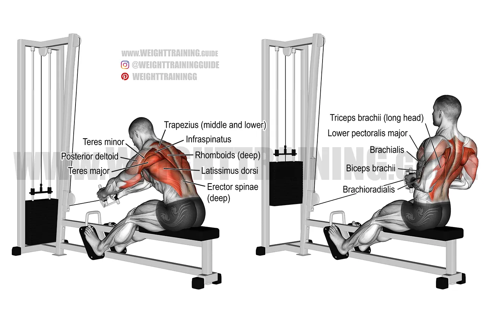 |
| Seated Row — בישיבה כנגד מכונה ייעודית | מפרק הכתף | כפיפה — Shoulder flexion פשיטה — Shoulder extension |
Latissimus dorsi | Posterior deltoid, Pectoralis major — lower fibers, Teres major, Long head of triceps brachii | |
| Seated Row — בישיבה כנגד מכונה ייעודית | מפרק השכמה | סיבוב מעלה — Upward rotation סיבוב מטה — Downward rotation |
Middle trapezius | Rhomboids | |
| Lateral Raises — בישיבה כנגד מכונה ייעודית | מפרק הכתף | קירוב — Shoulder adduction הרחקה — Shoulder abduction |
Deltoid | Middle deltoid, Supraspinatus | 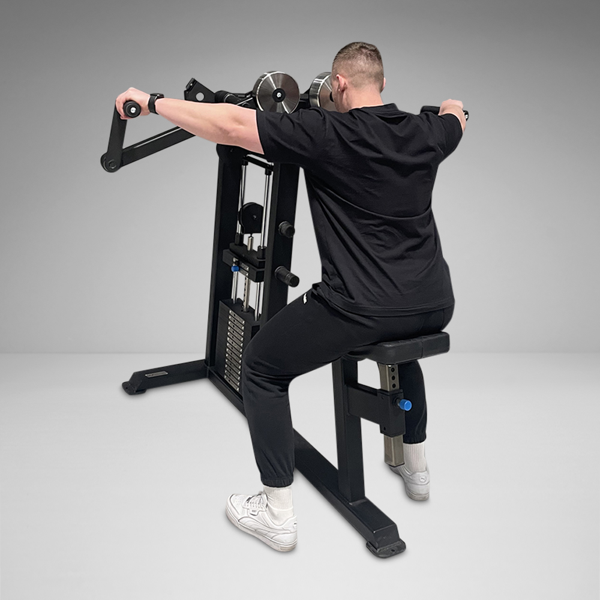 |
| Lateral Raises — בישיבה כנגד מכונה ייעודית | מפרק השכמה | סיבוב מטה — Downward rotation סיבוב מעלה — Upward rotation |
Serratus anterior | Upper trapezius, Lower trapezius — בצמד כוחות | |
| Leg Extension — בישיבה כנגד מכונה ייעודית | מפרק הברך | כפיפה — Knee flexion פשיטה — Knee extension |
Quadriceps femoris |  |
|
| Leg Press — בישיבה כנגד מכונה ייעודית | מפרק הירך | כפיפה — Hip flexion פשיטה — Hip extension |
Gluteus maximus | Hamstrings, Hip adductors | 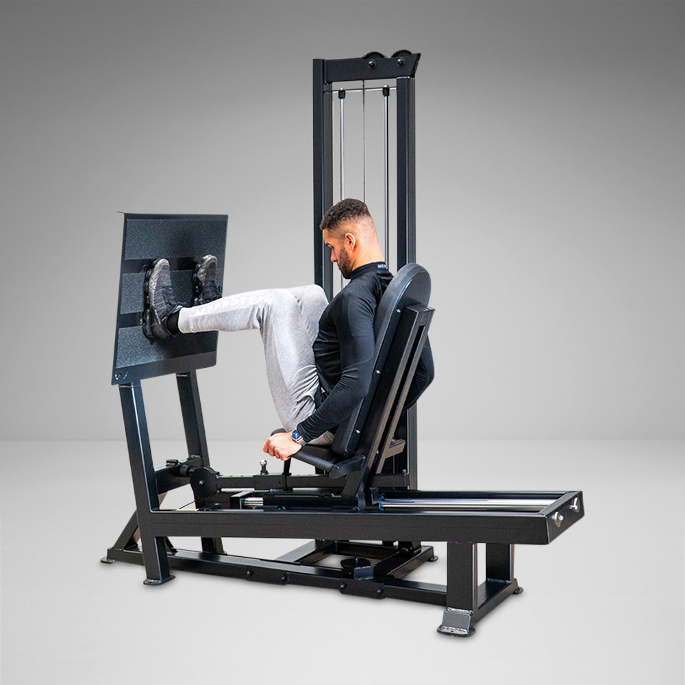 |
| Leg Press — בישיבה כנגד מכונה ייעודית | מפרק הברך | כפיפה — Knee flexion פשיטה — Knee extension |
Quadriceps femoris | ||
| Inner Thigh — בישיבה כנגד מכונה ייעודית | מפרק הירך | הרחקה — Hip abduction קירוב — Hip adduction |
Hip adductors |  |
|
| Outer Thigh — בישיבה כנגד מכונה ייעודית | מפרק הירך | קירוב — Hip adduction הרחקה — Hip abduction |
Gluteus medius | Gluteus minimus | 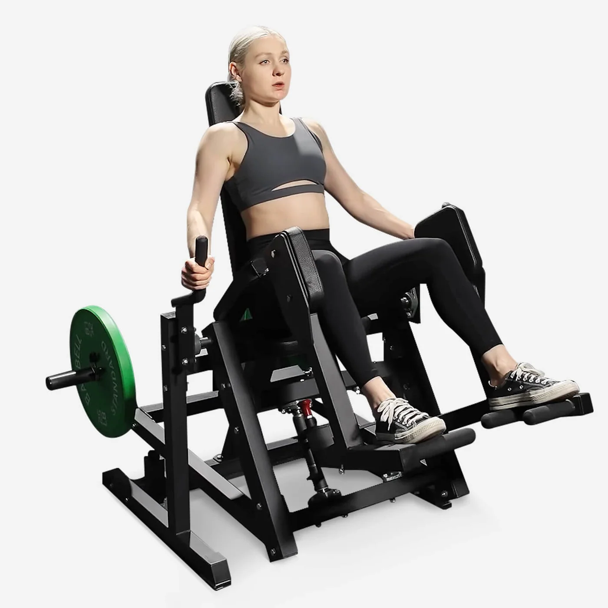 |
| Pec Fly — בישיבה כנגד מכונה ייעודית | מפרק הכתף | הרחקה אופקית — Horizontal abduction קירוב אופקי — Horizontal adduction |
Pectoralis major | Coracobrachialis, Anterior deltoid, Short head of biceps brachii | 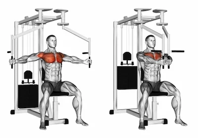 |
| Pec Fly — בישיבה כנגד מכונה ייעודית | מפרק השכמה | סיבוב מטה — Downward rotation סיבוב מעלה — Upward rotation |
Serratus anterior | Upper trapezius, Lower trapezius — בצמד כוחות | |
| Rear Delt — בישיבה כנגד מכונה ייעודית | מפרק הכתף | קירוב אופקי — Horizontal adduction הרחקה אופקית — Horizontal abduction |
Posterior deltoid | Teres minor, Infraspinatus | 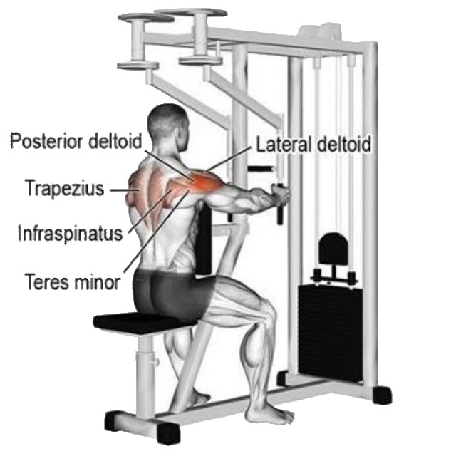 |
| Leg Curl — בשכיבה כנגד מכונה ייעודית | מפרק הברך | פשיטה — Knee extension כפיפה — Knee flexion |
Hamstrings | Gastrocnemius | 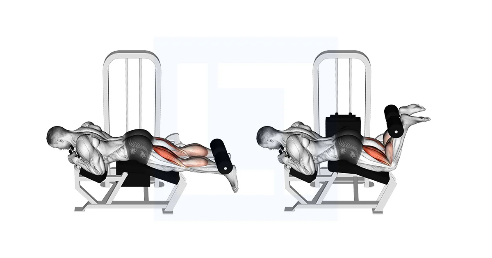 |
| Leg Curl — בשכיבה כנגד מכונה ייעודית | מפרק הקרסול | כפיפה גבית — Dorsiflexion כפיפה כפית — Plantar flexion |
Gastrocnemius | Soleus | |
| Glute Extension — בעמידה כנגד מכונה ייעודית | מפרק הירך | כפיפה — Hip flexion פשיטה — Hip extension |
Gluteus maximus | Hamstrings, Hip adductors | 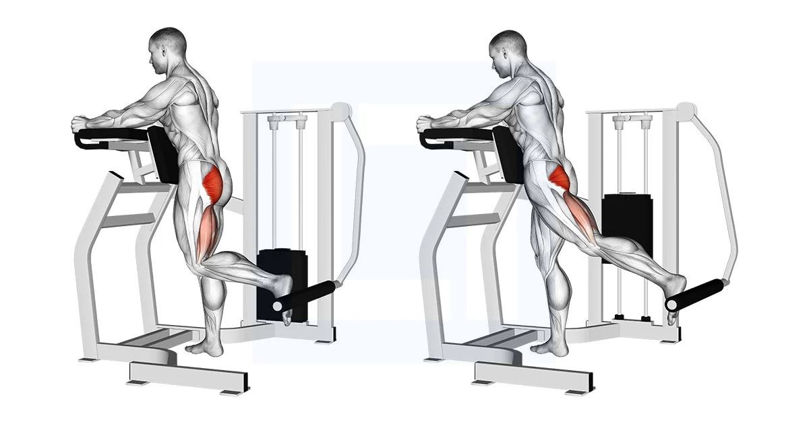 |
| Lat Pulldown — בישיבה כנגד מכונה ייעודית | מפרק המרפק | כפיפה — Elbow flexion פשיטה — Elbow extension |
Triceps brachii | 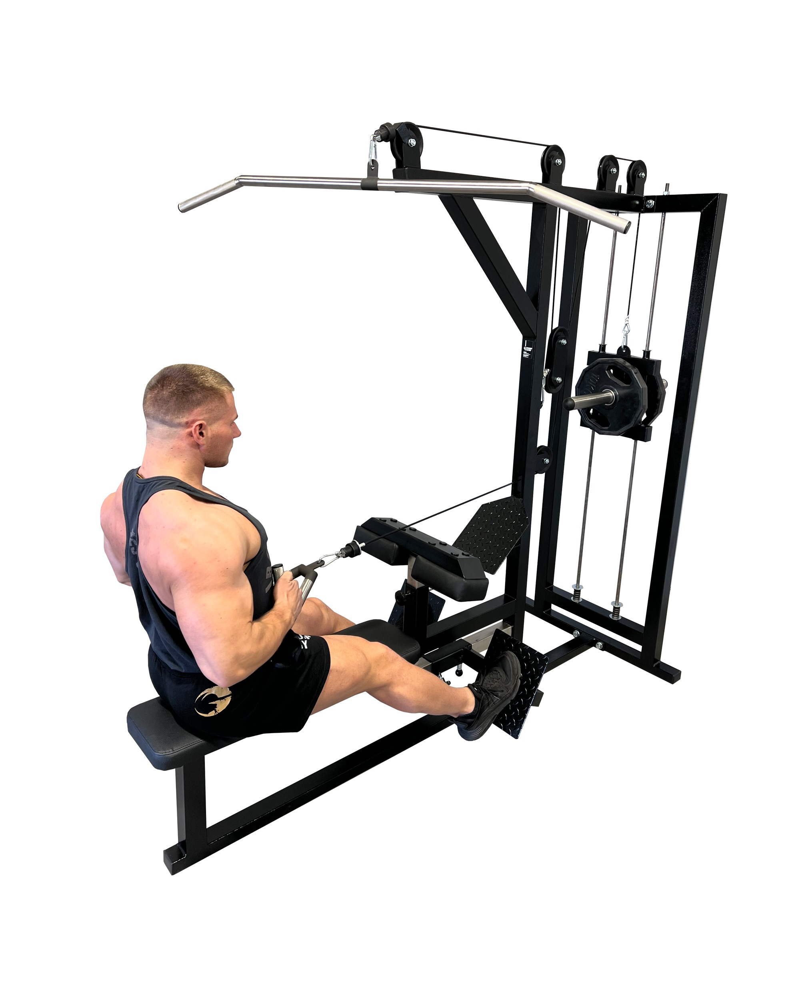 |
|
| Lat Pulldown — בישיבה כנגד מכונה ייעודית | מפרק הכתף | סיבוב חיצוני — External rotation סיבוב פנימי — Internal rotation |
Latissimus dorsi | Pectoralis major, Subscapularis, Teres major, Anterior deltoid | |
| Lat Pulldown — בישיבה כנגד מכונה ייעודית | מפרק השכמה | סיבוב מעלה — Upward rotation סיבוב מטה — Downward rotation |
Middle trapezius | Rhomboids — בצמד כוחות | |
| Gravitron — מתח באחיזה רחבה | מפרק הכתף | הרחקה — Shoulder abduction קירוב — Shoulder adduction |
Latissimus dorsi | Posterior deltoid, Pectoralis major — lower fibers, Teres major, Coracobrachialis | 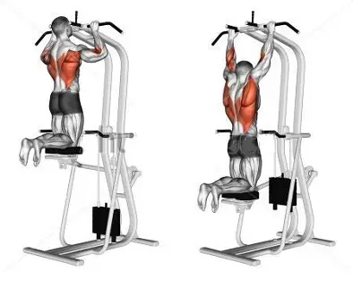 |
| Gravitron — מתח באחיזה רחבה | מפרק השכמה | סיבוב מעלה — Upward rotation סיבוב מטה — Downward rotation |
Middle trapezius | Rhomboids — בצמד כוחות | |
| Gravitron — מתח באחיזה רחבה | מפרק המרפק | פשיטה — Elbow extension כפיפה — Elbow flexion |
Biceps brachii | Brachialis, Brachioradialis | |
| Gravitron — מקבילים באחיזה צרה | מפרק המרפק | כפיפה — Elbow flexion פשיטה — Elbow extension |
Triceps brachii | 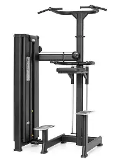 |
|
| Gravitron — מקבילים באחיזה צרה | מפרק הכתף | פשיטה — Shoulder extension כפיפה — Shoulder flexion |
Anterior deltoid | Pectoralis major — clavicular head, Coracobrachialis, Short head of biceps brachii | |
| חתירה בשיפוע שלילי על כיסא כנגד משקולות — אחיזה צרה | מפרק הכתף | כפיפה — Shoulder flexion פשיטה — Shoulder extension |
Latissimus dorsi | Posterior deltoid, Pectoralis major — lower fibers, Teres major, Long head of biceps brachii | 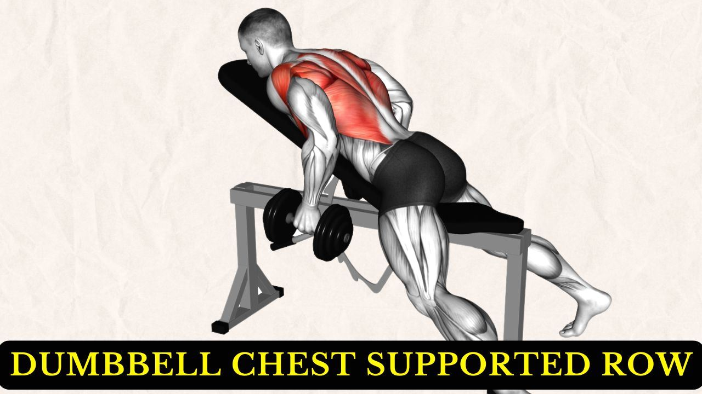 |
| חתירה בשיפוע שלילי על כיסא כנגד משקולות — אחיזה צרה | מפרק השכמה | סיבוב מעלה — Upward rotation סיבוב מטה — Downward rotation |
Middle trapezius | Rhomboids — בצמד כוחות | |
| חתירה בשיפוע שלילי על כיסא כנגד משקולות — אחיזה צרה | מפרק המרפק | פשיטה — Elbow extension כפיפה — Elbow flexion |
Biceps brachii | Brachialis, Brachioradialis | |
| חתירה בשיפוע שלילי על כיסא כנגד משקולות — אחיזה רחבה | מפרק הכתף | סיבוב חיצוני — External rotation סיבוב פנימי — Internal rotation |
Latissimus dorsi | Pectoralis major, Subscapularis, Teres major, Anterior deltoid | 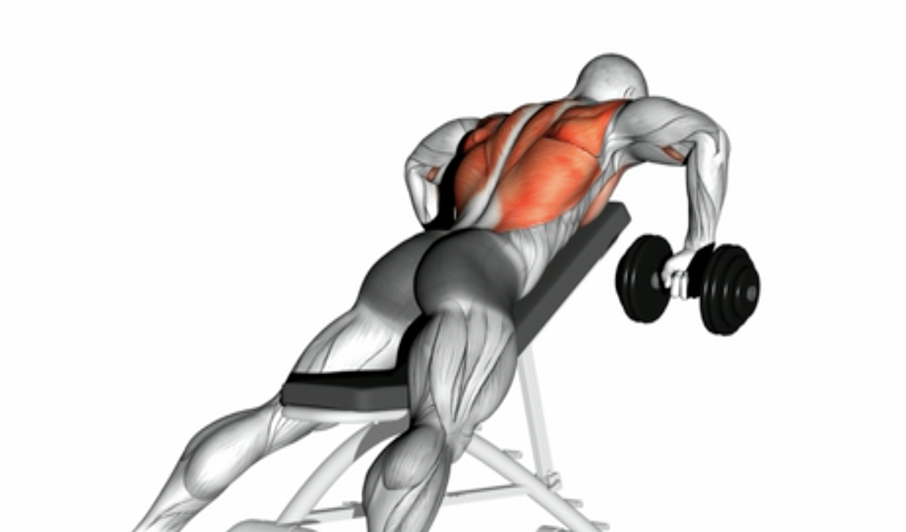 |
| חתירה בשיפוע שלילי על כיסא כנגד משקולות — אחיזה רחבה | מפרק השכמה | סיבוב מעלה — Upward rotation סיבוב מטה — Downward rotation |
Middle trapezius | Rhomboids — בצמד כוחות | |
| חתירה בשיפוע שלילי על כיסא כנגד משקולות — אחיזה רחבה | מפרק המרפק | פשיטה — Elbow extension כפיפה — Elbow flexion |
Biceps brachii | Brachialis, Brachioradialis | |
| הרמת תאומים בישיבה כנגד מכונה | מפרק הקרסול | כפיפה גבית — Dorsiflexion כפיפה כפית — Plantar flexion |
Soleus | Gastrocnemius | 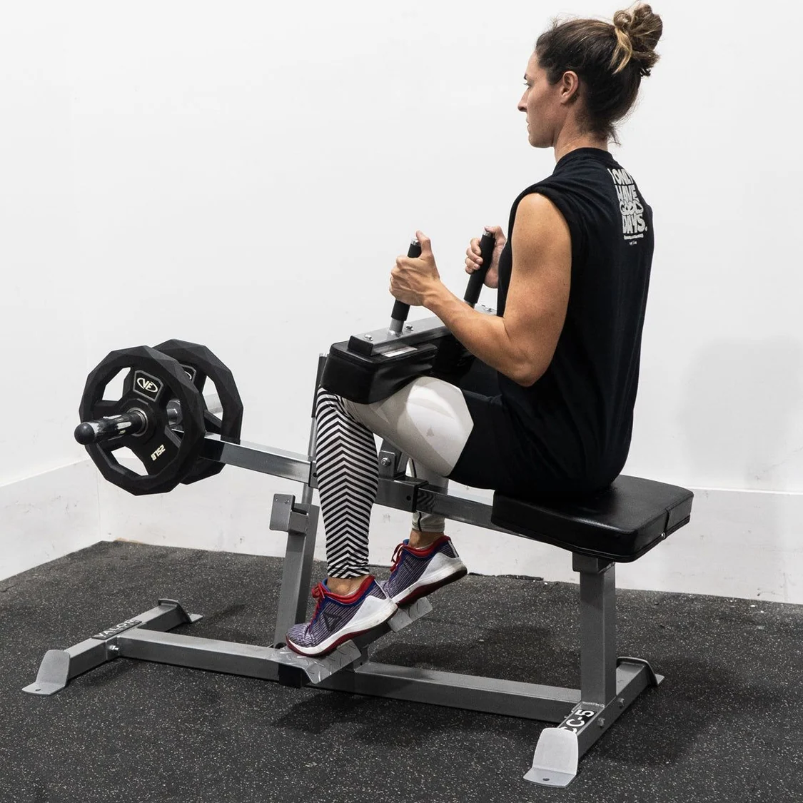 |
| Hack Squat — בעמידה כנגד מכשיר ייעודי | מפרק הירך | כפיפה — Hip flexion פשיטה — Hip extension |
Gluteus maximus | Hamstrings, Hip adductors | 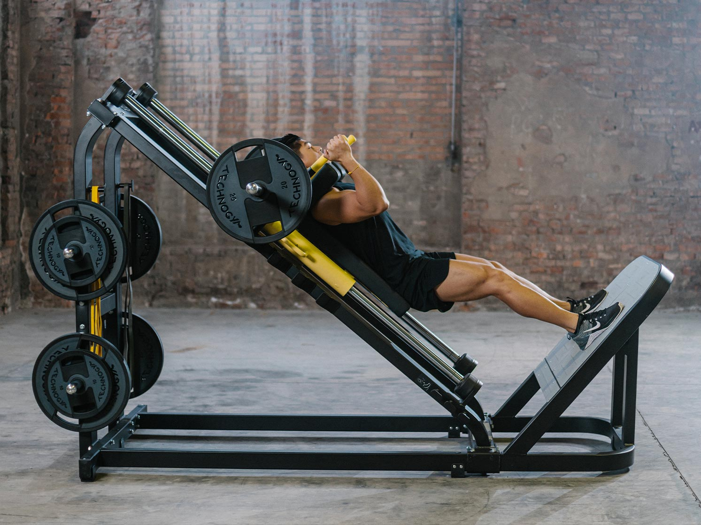 |
| Hack Squat — בעמידה כנגד מכשיר ייעודי | מפרק הברך | כפיפה — Knee flexion פשיטה — Knee extension |
Quadriceps femoris | ||
| Hip Thrust | מפרק הירך | כפיפה — Hip flexion פשיטה — Hip extension |
Gluteus maximus | Hamstrings, Hip adductors | 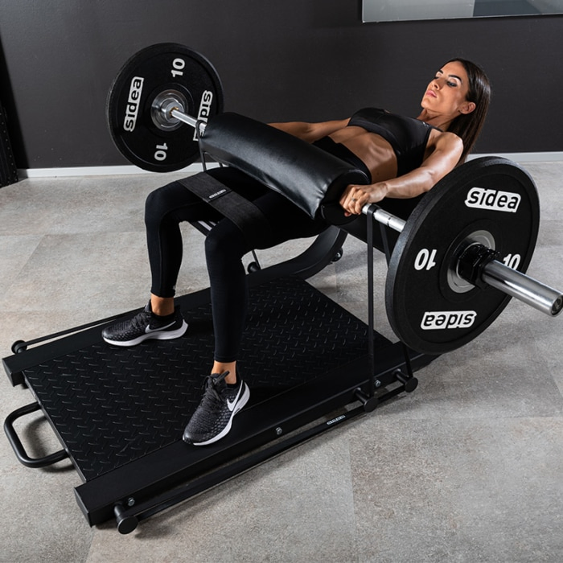 |
| Hip Thrust | מפרק האגן | סיבוב האגן לפנים — Anterior pelvic tilt סיבוב האגן לאחור — Posterior pelvic tilt |
Gluteus maximus | Hamstrings, Rectus abdominis | |
| Shoulder Press — בישיבה כנגד מכונה | מפרק הכתף | סיבוב פנימי — Internal rotation סיבוב חיצוני — External rotation |
Infraspinatus | Posterior deltoid, Teres minor |  |
| Shoulder Press — בישיבה כנגד מכונה | מפרק השכמה | סיבוב מטה — Downward rotation סיבוב מעלה — Upward rotation |
Serratus anterior | Upper trapezius, Lower trapezius — בצמד כוחות | |
| Shoulder Press — בישיבה כנגד מכונה | מפרק המרפק | כפיפה — Elbow flexion פשיטה — Elbow extension |
Triceps brachii | ||
| פשיטה בכתף בישיבה כנגד משקולות חופשיות | מפרק הכתף | סיבוב חיצוני — External rotation סיבוב פנימי — Internal rotation |
Latissimus dorsi | Pectoralis major, Subscapularis, Teres major, Anterior deltoid | 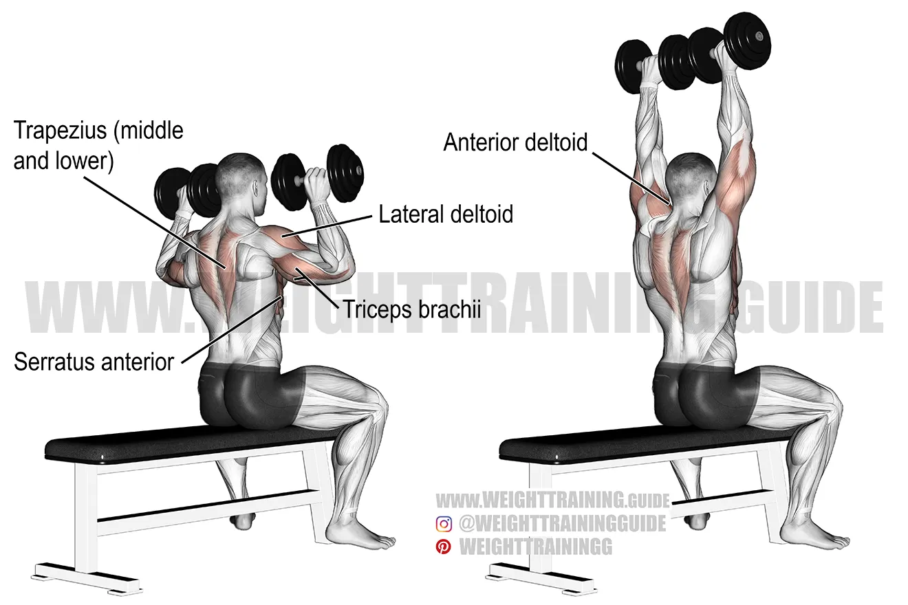 |
| פשיטה בכתף בישיבה כנגד משקולות חופשיות | מפרק המרפק | פשיטה — Elbow extension כפיפה — Elbow flexion |
Biceps brachii | Brachialis, Brachioradialis | |
| פשיטה בכתף בישיבה כנגד משקולות חופשיות | מפרק השכמה | סיבוב מעלה — Upward rotation סיבוב מטה — Downward rotation |
Middle trapezius | Rhomboids — בצמד כוחות |